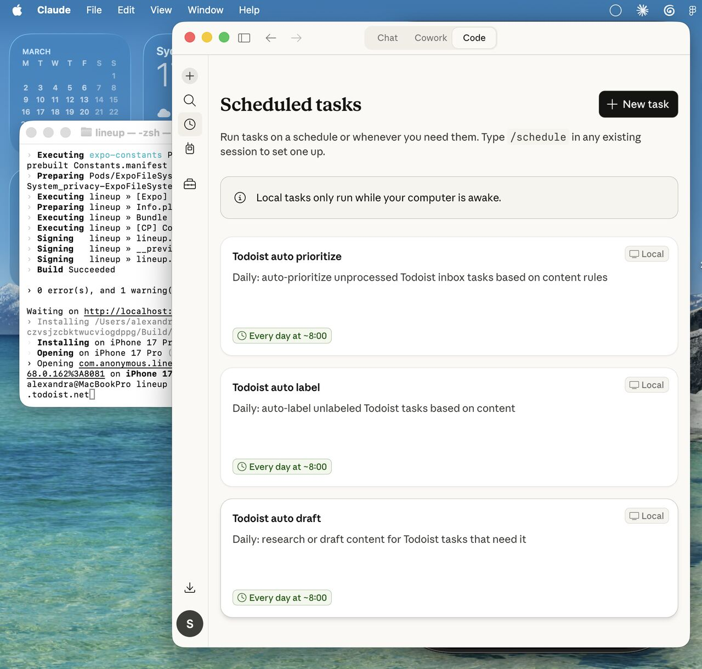

Winoa Global HR Summit · June 2026
with Sasha Pometko - Senior Product Designer & AI Enablement
shorturl.at/wVw9S
Have you used AI this week? Drop what for.
Answers appear live for everyone
Section 1
Senior Product Designer. AI Enablement.
8+ years across healthcare, edtech, fintech & enterprise.
About me
Just accepted a role at Commonwealth Bank of Australia.
Previously supported 600+ designers at Atlassian in adopting AI-driven practices - training programs, global communities of practice, AI agent tooling.
Worked across healthcare, MedTech, EdTech, SaaS, and finance - plus academic research published in ACM HCI conferences.
I did an internship at Winoa around age 15 - on-site at the plant, sifting through metal pellets in the lab. Really nice to be back talking about the future.
Career highlights - click any card
Scaled a global AI Design Community of Practice across APAC, EMEA, India, and Americas. 30% attendance, 90% session relevance, 90% increased confidence. Built AI agents for Design Ops and led AI labs in SF and Sydney.
3-year Design System roadmap tied to OKRs, improving cross-functional contribution by 48%. Platform serves 246,000+ children with social-emotional learning tools.
13 educational games, 61,500+ play sessions/year. Reduced game production from 6 to 3 months using generative AI. Onboarding time-to-value from 33% to 69%.
VR medical device that reduces endometriosis pain by 51% in clinical trials within 15 minutes. Owned ISO 13485 regulatory UX documentation for French market.
Co-created a new method for remote user testing published in ACM HCI Proceedings (CHI and DIS conferences). Researched human-drone interaction.
#1 tech community on Meetup.com in San Sebastián. 300+ members, 35 events covering AI, vibe coding, product design, game design.
Section 2
I don't just use AI. I built a system that knows me.
The problem
Every new chat meant re-explaining context, re-loading stakeholder names, re-orienting the AI to my voice. The cognitive overhead was killing productivity.
"How might I design an AI system that behaves like a senior colleague who has been working alongside me for months - not a search engine I have to brief every time?"
A persistent AI copilot tailored to my exact role, projects, and working style. It reads my files, remembers decisions, writes in my voice, and takes action across tools.
The architecture
Voice-first with Wispr Flow
One keypress and everything I say is instantly transcribed, anywhere I'm typing. AI captures and formats my thoughts - it doesn't create them.
Typing restricts your thinking. When you type, you shortcut the cognitive process. When you speak, you're forced to reason out loud first. That's where the real thinking happens.
🎙️ Live demo - try Wispr Flow here
A live example
Click each step to see the detail
Automation in practice
For any research task - "find a surf coach in Bondi", "look into visa conditions" - Claude does the work and writes it into the task description. Thinking done before I open it.
I told Claude what matters right now: visa, work, health, finances. Anything that maps to those areas gets auto-flagged as Priority 1. No manual triage.
Claude reads each new inbox task and applies the right label from my full list. I add tasks messily - the system organizes overnight.
How? Got a Todoist API key, pointed Claude at it, described my system in plain language. That's it.

What's one repeatable task you do all the time - something you follow the same steps for every time - that you could turn into a skill for your own AI assistant?
Section 3
You don't need to be a tech expert.
But some things are becoming non-negotiable.
The big shift
Research → brainstorm → ideation → wireframes → implementation. Each phase: weeks. Completing the steps = doing your job well.
All those steps now take 20 minutes. What matters: Did you have the right strategy? Did it deliver results? Process is table stakes.
If your work is mostly about completing steps correctly rather than producing real impact, that work is increasingly automatable. The people who thrive will identify what outcome is needed and use AI to get there.
5 skills that matter - click any to expand
AI has made process execution cheap. The employees who thrive will identify what outcome is needed and use AI to get there - not those who execute tasks well.
Non-technical people will need to set up AI OS, create automations, connect tools. An MCP is a "plug" letting AI read from and write to other systems - without copy-pasting. Goal: less fear of configuration.
The skill: look at a workflow and ask "which steps should a human actually be doing?" This is process analysis, not programming.
The key skill: knowing the difference between using AI to support non-strategic work vs. letting it replace your thinking. Voice dictation forces me to form a thought before asking AI for help.
Tell AI not just what to change - but what should stay as-is, to avoid hallucinations. Always include examples of good and bad outputs. Better prompt = less editing.
New roles companies will need
People who have done the work themselves. Good teachers who create genuine energy around AI adoption - as colleagues, not "the AI person." They lead by example, not by title.
Rolling out AI at speed across a whole organization is an industrial revolution. You cannot expect people to figure it out alone. Dedicated change management is essential.
A role I've lived. Connects systems, builds AI agents, designs workflows. As AI becomes infrastructure, every org needs people who can operate it.
In your area, what new roles and skills have you noticed emerging?
Section 4
Individual productivity isn't enough.
You need a system.
What actually works
Examples must be relevant to people's actual work. Internal creators become points of contact - employees can follow up directly. External vendors can't do this.
1-2 minute videos, one tool per video. Always followed by immediate hands-on practice. People learn by doing, not watching.
People need to feel competent, not just informed. Design for confidence through repetition and community. Fear and uncertainty are the real blockers.
Atlassian model
Show the best AI use cases from across your company - real people, real work, not vendor demos. Energy-building mode, not tutorial mode. Stories of impact.
Step-by-step tutorials led by someone who uses these tools daily. For global teams: multiple time zones, prep work beforehand so no setup time is wasted on the day.
Small groups take a project they're currently working on and optimize it with AI. It's not extra time away from work - it is their work. They leave with something they can use Monday.
Groups present what they built. Recognition and momentum. This creates the internal story your org tells itself about AI - from real people doing real work. Showcases surface your next wave of champions.
Communities of practice
Champions Network: Identify the highest AI tool users. Invite them to run weekly office hours. Make them go-to facilitators for future training. They lead as colleagues, not "the AI person."
But being a power user doesn't make someone a good teacher. Champions need coaching: bite-sized knowledge, follow-along tutorials, patience, and the ability to explain the simplest thing without being condescending. The best champions remember what it felt like to not know.
Async sharing channels: Short screen recordings of experiments. Reactions create organic momentum. Normalise experimentation and make it visible across the org.
The thing everyone misses
AI adoption at scale requires thinking about the whole workflow - not just individual roles. This requires cross-functional coordination, which is exactly why HR and ops leaders are so central to getting this right.
This is a change management problem as much as a technology problem. Treat it accordingly and you'll get results. Treat it like a software deployment and you'll have a very expensive shelf product.
Section 5
From a prompt library to a system that runs itself.
The next level
Remember to use AI → find the right prompt → paste context → get output → act on it. Every. Single. Time. Manual at every step.
Triggered automatically. Context already loaded. Output delivered where you need it. You review and decide - not do the steps.
Example: hiring a new role
This applies to any AI tool. Click through each step.
The morning briefing agent
An agent that runs every morning, reads everything overnight, and prepares your day before you open your laptop. Zero manual effort.
Resource spotlight
Thank you
Sasha Pometko · linkedin.com/in/sasha-pometko
What's the one thing you're taking away that you want to bring into your work?